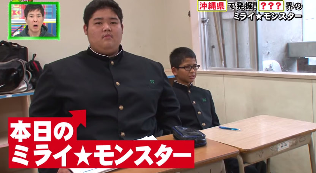

<!DOCTYPE html>
<html lang="ko">
	<head prefix="og: http://ogp.me/ns# article: http://ogp.me/ns/article#">
		<meta charset="UTF-8">

		<link rel="canonical" href="https://ichan.co/post/JQgqaQrn">

		<meta name="author" content="ichan">
		<meta name="description" content="열도의 중학생 발육상태.jpg">
		<meta name="keywords" content="meme, news, trending, 이슈, 유머, 커뮤니티, 뉴스, 재미, 인기, 아이챈">
		<meta name="referrer" content="same-origin">
		<meta name="creator" content="ichan">
		<meta name="publisher" content="ichan">
		<meta name="audience" content="all">

		<!-- schema.org-vocabulary metadata in JSON-LD -->
		<!-- Consumed by Google and Pinterest. -->
		<script type="application/ld+json">
			{
				"@context": "https://schema.org",
				"@type": "Article",

				"articleSection": "Meme",
				"articleBody": "<p></p>\n<p><br></p>\n<p><span style=\"font-size: 16px;\">&#xFEFF;&#xC606; &#xD559;&#xC0DD; : &#xC624;&#xB298;&#xC740; &#xC5B4;&#xB5A4;&#xBE75;&#xC744; &#xC0AC;&#xC640;&#xC57C;&#xD560;&#xAE4C;...</span><br></p>\n<p>\n</p>",
				"wordCount": 6,
				"speakable": null,


				"schemaVersion": "http://schema.org/version/5.0/",

				"accessMode": ["textual", "visual", "auditory"],
				"accessModeSufficient": [
					{
						"@type": "ItemList",
						"itemListElement": ["textual", "visual"],
						"numberOfItems": 2
					}
				],
				"accessibilityAPI": null,
				"accessibilityControl": ["fullKeyboardControl", "fullMouseControl", "fullTouchControl"],
				"accessibilityFeature": ["index", "readingOrder", "structuralNavigation", "ttsMarkup"],
				"accessibilityHazard": "unknown",
				"accessibilitySummary": "Mostly consists of images and texts; might have videos; lacks alternative descriptions for the images and videos.",

				"headline": "열도의 중학생 발육상태.jpg",
				"genre": "Meme",
				"text": "\n\n옆 학생 : 오늘은 어떤빵을 사와야할까...\n\n",
				"associatedMedia": null,
				"video": [],
				"thumbnailUrl": null,
				"keywords": "meme, news, trending, 이슈, 유머, 커뮤니티, 뉴스, 재미, 인기, 아이챈",

				"inLanguage": "ko",
				"isAccessibleForFree": true,
				"isFamilyFriendly": true,
				"typicalAgeRange": "0+",
				"audience": {
					"@type": "Audience",
					"audienceType": "all"
				},
				"dateCreated": "2019-11-12T04:48:21.005Z",
				"datePublished": "2019-11-12T14:43:02.610Z",
				"author": {"@id": "https://ichan.co"},
				"provider": {"@id": "https://ichan.co"},
				"publisher": {"@id": "https://ichan.co"},
				"sponsor": [],
				"material": ["health", "distress", "desperation", "artisanship", "perfectionism"],

				"version": null,
				"license": null,
				"position": 14,
				"discussionUrl": "https://ichan.co/post/JQgqaQrn#disqus_thread",
				"aggregateRating": null,


				"image": null,
				"identifier": "JQgqaQrn",
				"url": "https://ichan.co/post/JQgqaQrn"
			}
		</script>

		<!-- Pinterest-extended Open Graph metadata (markups in RDFa) -->
		<!-- Consumed by Pinterest, Twitter, and Facebook. -->
		<meta property="og:locale" content="ko">
		<meta property="og:url" content="https://ichan.co/post/JQgqaQrn">
		<meta property="og:type" content="article">
		<meta property="og:title" content="열도의 중학생 발육상태.jpg ⸺ 세상의 모든 이슈, 아이챈!">
		<meta property="og:description" content="열도의 중학생 발육상태.jpg">
		<meta property="og:determiner" content="">
		<meta property="og:site_name" content="ichan">
		<!--meta property="og:image" content="TOBEWRITTEN">
		<meta property="og:image:secure_url" content="TOBEWRITTEN">
		<meta property="og:image:type" content="TOBEWRITTEN">
		<meta property="og:image:width" content="TOBEWRITTEN">
		<meta property="og:image:height" content="TOBEWRITTEN"-->
		<meta property="article:published_time" content="2019-11-12T14:43:02.610Z">
		<meta property="article:author" content="https://ichan.co">
		<meta property="article:section" content="Meme">
		<meta property="article:tag" content="meme">
		<meta property="article:tag" content="news">
		<meta property="article:tag" content="trending">
		<meta property="article:tag" content="이슈">
		<meta property="article:tag" content="유머">
		<meta property="article:tag" content="커뮤니티">
		<meta property="article:tag" content="뉴스">
		<meta property="article:tag" content="재미">
		<meta property="article:tag" content="인기">
		<meta property="article:tag" content="아이챈">
		<meta property="og:see_also" content="https://ichan.co/post/xMfZaVOY">
		<meta property="og:see_also" content="https://ichan.co/post/6WSQ8LHA">
		<meta property="og:see_also" content="https://ichan.co/post/ck3CbhUp">
		<meta property="og:see_also" content="https://ichan.co/post/4rg8vkQ0">
		<meta property="og:see_also" content="https://ichan.co/post/HR5nlocd">
		<meta property="og:see_also" content="https://ichan.co/post/4NI8pj1O">

		<title>열도의 중학생 발육상태.jpg ⸺ 세상의 모든 이슈, 아이챈!</title>

		<meta name="theme-color" content="white">
		<meta name="color-scheme" content="light dark">
		<meta name="viewport" content="width=device-width">
		<meta name="msapplication-TileColor" content="white">

		<link rel="icon" href="/resources/images/logo.png">
		<link rel="apple-touch-icon" href="/resources/images/logo.png">

		<link rel="stylesheet" href="https://fonts.googleapis.com/css?family=Noto+Sans+KR:300,700&display=swap&subset=korean">
		<link rel="stylesheet" href="/resources/stylesheets/document.css">
		<link rel="stylesheet" href="/resources/stylesheets/header.css">
		<link rel="stylesheet" href="/resources/stylesheets/contents.css">
		<link rel="stylesheet" href="/resources/stylesheets/footer.css">
		<link rel="stylesheet" href="/resources/stylesheets/post.css">
		<link rel="stylesheet" href="/resources/stylesheets/disqus-thread.css">
		<link rel="stylesheet" href="/resources/stylesheets/index.css">
		<link rel="stylesheet" href="/resources/stylesheets/entry.css">
		<link rel="stylesheet" href="/resources/stylesheets/pagination.css">

		<!-- Google Analytics -->
		<script id="google-analytics" src="https://www.googletagmanager.com/gtag/js?id=UA-151994823-1" data-google-analytics-tracking-identifier="UA-151994823-1" async></script>
		<script type="module" src="/resources/modules/activate_google_analytics.mjs"></script>

		<script src="/resources/scripts/disqus.js"></script>
		<script src="https://s7.addthis.com/js/300/addthis_widget.js#pubid=ra-5dbf6d76272975b2" defer></script>
	</head>
	<body>
		<header class="header">
			<a class="header__home-page-link" href="https://ichan.co">
				아이챈
				<p class="header__catchphrase">세상의 모든 이슈</p>
			</a>
		</header>
		<main class="contents">
			<article class="contents__card post">
				<h1 class="post__title">열도의 중학생 발육상태.jpg</h1>
				<p></p>
<p><br></p>
<p><span style="font-size: 16px;">&#xFEFF;&#xC606; &#xD559;&#xC0DD; : &#xC624;&#xB298;&#xC740; &#xC5B4;&#xB5A4;&#xBE75;&#xC744; &#xC0AC;&#xC640;&#xC57C;&#xD560;&#xAE4C;...</span><br></p>
<p>
</p>
			</article>
			<section id="disqus_thread" class="contents__card disqus-thread">
				<noscript>
					<p class="disqus-thread__unavailablility-notice">
						You have to enable Javascript to see and leave comments on this post.<br>
						이 글에 댓글을 달거나 그러한 댓글을 보려면 자바스크립트를 쓸 수 있게 설정하세요.
					</p>
				</noscript>
			</section>
			<section class="contents__card">
				<ul class="index">
					<li class="index__entry entry">
						<span class="entry__tag">#26</span>
						<a class="entry__link" href="/post/wBnRlTwQ">천조국의 언어유희.jpg</a>
					</li>
					<li class="index__entry entry">
						<span class="entry__tag">#25</span>
						<a class="entry__link" href="/post/kHwuYbYM">장갑차의 방향틀기.gif</a>
					</li>
					<li class="index__entry entry">
						<span class="entry__tag">#24</span>
						<a class="entry__link" href="/post/4NI8pj1O">이과생들의 장난.gif</a>
					</li>
					<li class="index__entry entry">
						<span class="entry__tag">#23</span>
						<a class="entry__link" href="/post/V-CuFKvQ">한국의 흔한 핵폭탄.jpg</a>
					</li>
					<li class="index__entry entry">
						<span class="entry__tag">#22</span>
						<a class="entry__link" href="/post/2Iu9py8_">가장 위험하고 예술적인 스포츠</a>
					</li>
					<li class="index__entry entry">
						<span class="entry__tag">#21</span>
						<a class="entry__link" href="/post/UY_vc_v5">도서관에서 두근대는 쪽지가 왔다.jpg</a>
					</li>
					<li class="index__entry entry">
						<span class="entry__tag">#20</span>
						<a class="entry__link" href="/post/J6wETgUH">미군들의 노는법.jpg</a>
					</li>
					<li class="index__entry entry">
						<span class="entry__tag">#19</span>
						<a class="entry__link" href="/post/X8gCogBm">채점하다 빡친 선생님.jpg</a>
					</li>
					<li class="index__entry entry">
						<span class="entry__tag">#18</span>
						<a class="entry__link" href="/post/CmyRA6em">친구와 얼굴을 바꿔보았다.jpg</a>
					</li>
					<li class="index__entry entry">
						<span class="entry__tag">#17</span>
						<a class="entry__link" href="/post/7Tf3YG0T">남학생과 여학생의 차이점</a>
					</li>
					<li class="index__entry entry">
						<span class="entry__tag">#16</span>
						<a class="entry__link" href="/post/5KbJR7_E">한국의 포장기술.jpg</a>
					</li>
					<li class="index__entry entry">
						<span class="entry__tag">#15</span>
						<a class="entry__link" href="/post/THPwmo7u">엄마가 잘 어울린다고 한 양복 인증한다.jpg</a>
					</li>
					<li class="index__entry entry entry--for-this-post">
						<span class="entry__tag">#14</span>
						<a class="entry__link" href="/post/JQgqaQrn">열도의 중학생 발육상태.jpg</a>
					</li>
					<li class="index__entry entry">
						<span class="entry__tag">#13</span>
						<a class="entry__link" href="/post/1P6lDF5e">사람들의 두가지 유형.jpg</a>
					</li>
					<li class="index__entry entry">
						<span class="entry__tag">#12</span>
						<a class="entry__link" href="/post/yDYV1WeE">겁나 신기한 담배.jpg</a>
					</li>
					<li class="index__entry entry">
						<span class="entry__tag">#11</span>
						<a class="entry__link" href="/post/E9RGmB5p">과일은 껍질채로 먹어야 좋다면서요?.jpg</a>
					</li>
					<li class="index__entry entry">
						<span class="entry__tag">#10</span>
						<a class="entry__link" href="/post/P6xTiAQV">스턴트 대역.jpg</a>
					</li>
					<li class="index__entry entry">
						<span class="entry__tag">#9</span>
						<a class="entry__link" href="/post/kUBI67iJ">안개마을 닌자들의 시위법.jpg</a>
					</li>
					<li class="index__entry entry">
						<span class="entry__tag">#8</span>
						<a class="entry__link" href="/post/jxJZNa-Q">손쉽게 신상터는법.jpg</a>
					</li>
					<li class="index__entry entry">
						<span class="entry__tag">#7</span>
						<a class="entry__link" href="/post/zkaH4NIF">동성애자들에게 지옥을.jpg</a>
					</li>
				</ul>
			</section>
			<section class="contents__card contents__card--transparent-background">
				<ul class="pagination">
					<li class="pagination__button">
						<a class="pagination__index-page-link pagination__index-page-link--the-first-of-all" href="/index/1">1</a>
					</li>
					<li class="pagination__ellipsis">
						……
					</li>
					<li class="pagination__button">
						<a class="pagination__index-page-link" href="/index/12">12</a>
					</li>
					<li class="pagination__button">
						<a class="pagination__index-page-link" href="/index/13">13</a>
					</li>
					<li class="pagination__button">
						<a class="pagination__index-page-link" href="/index/14">14</a>
					</li>
					<li class="pagination__button">
						<a class="pagination__index-page-link" href="/index/15">15</a>
					</li>
					<li class="pagination__button">
						<a class="pagination__index-page-link" href="/index/16">16</a>
					</li>
					<li class="pagination__button pagination__button--longer">
						<a class="pagination__index-page-link pagination__index-page-link--this" href="/index/17">17</a>
					</li>
					<li class="pagination__button">
						<a class="pagination__index-page-link pagination__index-page-link--the-last-of-all" href="/index/18">18</a>
					</li>
				</ul>
			</section>
		</main>
		<footer class="footer">
			<h1 class="footer__title">ichan.co</h1>
			<p class="footer__catchphrase">
				세상의 모든 이슈, 아이챈!
			</p>
			<address class="footer__contacts">
				Any suggestions? Got to submit a post takedown notice?
				개선할 점 알리기 / 권리자의 자격으로 게시 중단 요청하기
				💁 <a href="mailto:hey@ichan.co">hey@ichan.co</a>
			</address>
		</footer>
	</body>
</html>
